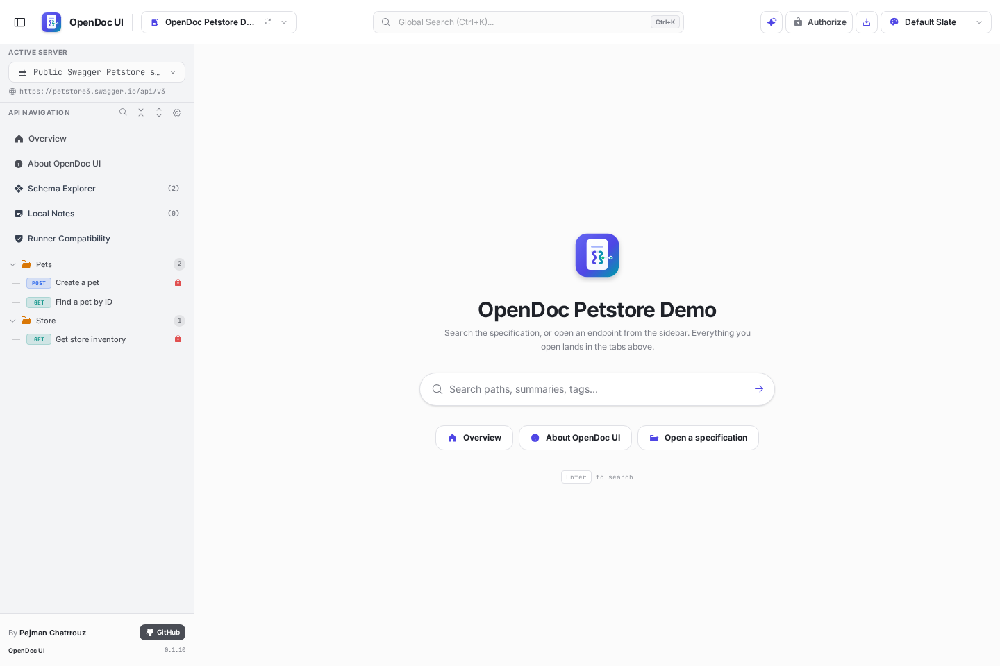
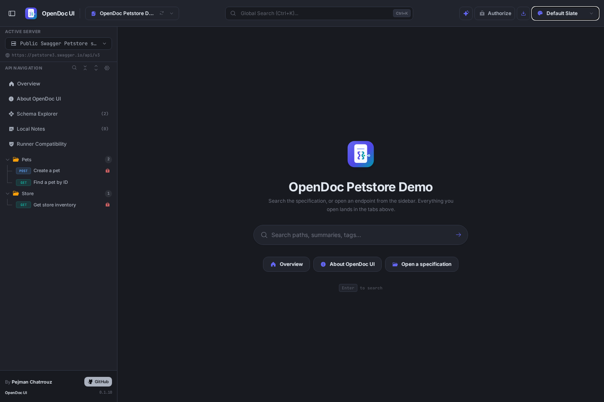

OpenDoc UI takes any OpenAPI 3.0, 3.1, 3.2 or Swagger 2.0 specification and renders it into a living reference: navigable endpoint documentation, a genuine request runner, a deep schema explorer, instant code generation, persistent local notes and an optional AI assistant — all client-side, with no server, no account and no setup.


Endpoint documentation in OpenDoc UI — method badges, parameter tables, the request-body matrix and response explorer, all rendered from a single OpenAPI file.
Open a specification once and every surface you need appears: read it, understand it, call it, generate against it, and keep notes beside it — without ever leaving the document.
Tag-based endpoint navigation with method badges, route display and protection indicators. Every operation renders its parameters, request bodies and response matrices with rich schema tables, examples, enum values and a built-in pattern tester — recursive and composed schemas handled safely.
Explore the documentation surfaceCompose real requests with path, query, header and cookie parameters, JSON or raw bodies, multipart file uploads and full authentication — bearer, API keys, basic auth and OAuth. Execute from the browser and inspect status, headers, body and history, with response cancellation.
See the runner in actionBrowse every model in components/schemas with search and letter filters, drill into referenced schemas, and inspect allOf/oneOf/anyOf/discriminator composition safely. Generate simulated example objects per media type and export any schema as TypeScript.
Dive into the schema matrixReady-to-run request snippets in curl, JavaScript fetch and axios, Python, Go, C#, PHP and Angular — with secrets automatically redacted into placeholders. Export the entire schema set as TypeScript models plus example constants, as a ZIP or a single file.
See generated codeSpec-scoped Markdown notes and todos with fourteen theme-safe tones. Todos can auto-hide endpoints when complete. A full trash with restore, an orphaned-notes list for renamed or removed endpoints, and JSON export/import — nothing is ever lost by accident.
Understand the notes workspaceAsk grounded questions about your API with citations, and let the assistant open endpoints, fill the Runner and prepare requests through a safe action bridge. Connect directly to OpenAI, Anthropic, Ollama or OpenRouter — or run a hardened server-side gateway.
Learn about the assistantChoose a local JSON or YAML file from your device, load a remote URL, or ship pre-configured specifications inside your own deployment. Multi-file references resolve in-memory, and your source document is never modified.
Navigate every endpoint, inspect every schema, generate examples and TypeScript, and verify patterns against real constraints. Deep links preserve exactly what you are looking at — shareable with anyone.
Execute authenticated requests against real servers, copy production-ready snippets into your stack, keep notes beside the endpoints you own, and export everything you need for your team.
OpenDoc UI speaks the dialects, protocols and stacks of real-world API development — from legacy Swagger documents to the latest OpenAPI 3.2 features.
GitHub Pages, Netlify, Vercel, S3, nginx — anywhere that serves static files, including air-gapped intranets.
Compose-based deployment with an nginx image, health checks and a reproducible, lockfile-pinned build.
OpenAI, Anthropic, Ollama, OpenRouter, or any OpenAI-compatible endpoint — direct or through a gateway.
Proxy and gateway examples for Node, Python, PHP, Go, Java, .NET, Ruby and Rust, ready to deploy.
The live demo opens the bundled Petstore specification instantly, and you can load your own JSON or YAML files on the spot. Everything stays in your browser; nothing is uploaded anywhere.